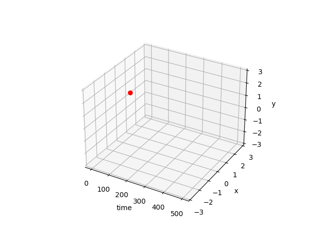

Pythonのmatplotで三次元動画を作成するプログラム

import numpy as np
import matplotlib.pyplot as plt
import seaborn as sns
import math
import matplotlib.animation as animation
from mpl_toolkits.mplot3d import Axes3D
def makeAnimetion(data):
print("make Flame")
fig = plt.figure()
ax = fig.add_subplot(111, projection='3d')
# label
ax.set_xlabel('time')
ax.set_ylabel('x')
ax.set_zlabel('y')
# dimention
ax.set_ylim(-3,3)
ax.set_zlim(-3,3)
ims = []
for i in range(len(data)):
bar = str(round(i*100/len(data))) + "%"
print("\r"+bar,end="")
X,Y,Z = data[i]
im = ax.plot(X,Y,Z, marker="o",color = "red", linestyle='None')
ims.append(im)
print("")
print("make Animation")
ani = animation.ArtistAnimation(fig, ims, interval=2)
ani.save("ani.gif", writer='ffmpeg', fps=20)
plt.show()
def main():
X = np.array([i for i in range(1,500)])
data = []
for i in range(len(X)):
data.append([X[i],math.sin(X[i]),math.cos(X[i])])
makeAnimetion(data)
if __name__ == '__main__':
main()
Tags: